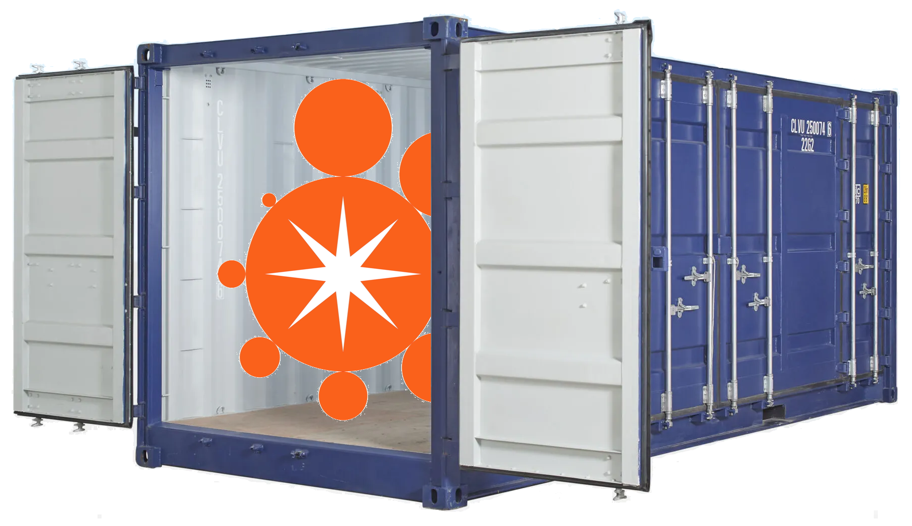

Containerising StarExec

Progress
- Port from Centos to Ubuntu
- Head node with local backend
- Configuration for a container
- Mounting external (persistent) volumes
- Port forwarding
Plans
- Cleaning up container poop
- Flexibility for new hardware configurations
- Merging updates from StarExec Iowa
- Making it publicly available